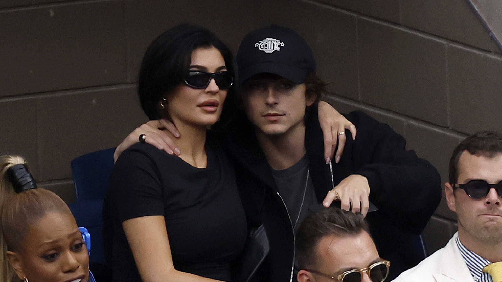

A artista cancelou algumas datas de sua turnê devido à pressão que sente em sua nova carreira. A cantora apareceu no programa "Jimmy Kimmel Live!" usando um blazer oversized, chamando a atenção por seu estilo fashion

A relação parece estar se intensificando. Rumores sobre o relacionamento com Chalamet ganharam força

 A artista cancelou algumas datas de sua turnê devido à pressão que sente em sua nova carreira.
A artista cancelou algumas datas de sua turnê devido à pressão que sente em sua nova carreira.